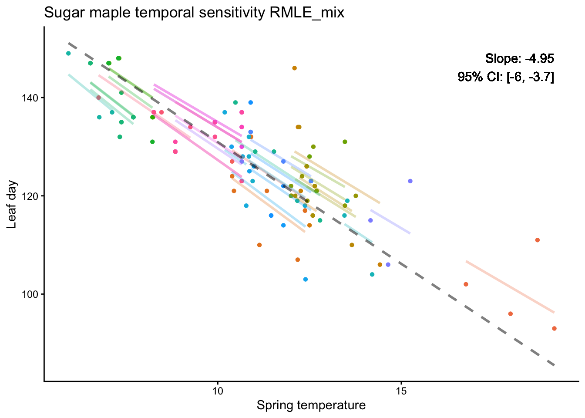

Fitting mixed-effect model using frequency method vs Bayesian method
Author
Yi Liu
Published
April 15, 2024
I compared frequency and Bayesian methods in mixed effects models.
The frequency approach typically relies on maximum likelihood estimation (MLE), which yields a single point estimate. MLE directly optimizes by calculating gradients, making it computationally efficient, especially in low-dimensional settings with simple model structures. This estimate is equivalent to the mode of the Bayesian posterior distribution under a flat prior.
Bayesian methods, on the other hand, treat all parameters as random variables and infer their full posterior distributions by incorporating prior information and using sampling techniques. This approach is more flexible and better suited for complex models but is computationally demanding since it explores the entire parameter space.
There is a spectrum between purely analytic and purely sampling-based approaches. For example, some sampling methods, such as NUTS, incorporate gradient calculations to guide the sampling process. We can also add prior to the MLE method (as shown later). In this sense, pure Bayesian sampling and frequentist analytic methods occupy opposite ends of the spectrum, with newer hybrid approaches emerging in between to combine the strengths of both.
Sugar maple flowering time data as a case study
I needed to fit a mixed effects model to estimate the slope of temperature sensitivity. The dataset is hierarchical: flowering times are recorded in multiple years for different individuals, making it a classic case for mixed effects modeling. Download the data here
Code
data <-readRDS("sugar_maple.rds")ggplot(data = data, aes(x = springT, y = leaf)) +geom_smooth(method ="lm", formula = y ~ x, se =TRUE, color ="black") +geom_point(aes(color =as.factor(individual_id))) +geom_smooth(method ="lm", formula = y ~ x, se =FALSE, aes(color =as.factor(individual_id), fill =as.factor(individual_id))) +labs(title ="Sugar maple",x ="Spring temperature", y ="Leaf day") +theme(legend.position ="none")
Figure: Each color represents a different individual sugar maple tree. Solid lines show individual regression fits. The bold black line is the population-level fit.
Regular MLE failed
Since this is a very standard mixed effects model, I first tried fitting it using the widely used lmer function from the lme4 package. However, the model failed to converge. Additionally, the results showed very small variation among groups, indicating that lmer essentially produced an almost completely pooled estimate that did not adequately account for the group-level differences.
Linear mixed model fit by REML ['lmerMod']
Formula: leaf ~ springT + (1 + springT | individual_id)
Data: data
REML criterion at convergence: 847.3228
Random effects:
Groups Name Std.Dev. Corr
individual_id (Intercept) 0.4794
springT 0.1735 -1.00
Residual 6.1876
Number of obs: 130, groups: individual_id, 36
Fixed Effects:
(Intercept) springT
168.332 -3.768
optimizer (nloptwrap) convergence code: 0 (OK) ; 0 optimizer warnings; 1 lme4 warnings
Add prior
To address this issue, we can impose a prior to establish a minimum bound on the variation among groups. This can be done in two ways: either by using a Restricted Maximum Likelihood Estimation (REML) approach that allows such constraints, or by fitting a Bayesian model that explicitly incorporates prior restrictions.
RMLE
As for REML, I use the blmer function from the blme package in R. I am using blme because it provides the option to integrate priors into the likelihood function, which can help mitigate the shrinkage issue caused by very small variance estimates during likelihood optimization.
For the 95% confidence interval, we used 100 bootstrap replications at the individual (tree) level (i.e., randomly selecting individuals), since most trees have only 3 or 4 observations, making within-individual bootstrapping impractical.
mix1 <- data %>%mutate(fit.m =predict(temporal_model, re.form =NA),fit.c =predict(temporal_model, re.form =NULL))label <-paste("Slope: ", round(slope_tem_rmle, 2), "\n95% CI: [", round(CI_lower, 2), ", ", round(CI_upper, 2), "]", sep ="")mix1 %>%ggplot(aes(x = springT, y = leaf, color =as.factor(individual_id))) +geom_point(shape =16) +# Plot data pointsgeom_line(aes(y = fit.c), linewidth =1, alpha =0.3) +geom_line(aes(y = fit.m), linewidth =1, linetype ="dashed", alpha =0.5, color ="black") +labs(title ="Sugar maple temporal sensitivity RMLE_mix",x ="Spring temperature", y ="Leaf day") +theme(legend.position ="none") +geom_text(x =max(data$springT), y =max(data$leaf), label = label, color ="black", hjust =1, vjust =1)

Bayesian method
For the Bayesian model, I used Stan’s default priors for all parameters except for the variances of the slope and intercept, for which I specified a Gamma prior with shape = 1 and rate = 50. I ran 10,000 iterations with 4 chains, using 5,000 iterations as warm-up, and did not thin the samples. The posterior mean and quantiles were used as the point estimates and 95% credible intervals for the slope, respectively.
Almost all parameters had an Rhat of 1, with a few reaching 1.01, indicating good convergence. However, there was a warning about “3 divergent transitions after warmup,” which may suggest some issues with sampling efficiency.
# Function to get group-specific rangesget_group_ranges <-function(data, group_col, x_col) { group_ranges <- data %>%group_by(!!sym(group_col)) %>%summarize(min_x =min(!!sym(x_col)), max_x =max(!!sym(x_col))) return(group_ranges)}# Function to create predictions within group-specific rangescreate_group_lines_with_ranges <-function(data, group_ranges, intercepts, slopes) { group_lines <-data.frame() # Loop through each group to create lines within their observed rangesfor (i inseq_along(intercepts)) { group_id <- i intercept <- intercepts[i] slope <- slopes[i] # Get the range for this group group_range <- group_ranges %>%filter(!!sym(group_col) == group_id) x_values <-seq(group_range$min_x, group_range$max_x, length.out =100) # Generate x values within the range y_values <- intercept + slope * x_values # Calculate y values for the line# Create a data frame for this group's line group_data <-data.frame(group = group_id,springT = x_values,leaf = y_values )# Append to the group lines data frame group_lines <-rbind(group_lines, group_data) }return(group_lines) }# Get group-specific rangesgroup_col <-"group"x_col <-"springT"group_ranges <-get_group_ranges(data, group_col, x_col)# Create group lines with the specific rangesgroup_lines <-create_group_lines_with_ranges(data, group_ranges, intercepts, slopes)ggplot(data, aes(x = springT, y = leaf, color =as.factor(group))) +geom_point(shape =16) +# Plot data pointsgeom_line(data = group_lines, aes(x = springT, y = leaf, color =as.factor(group)), linewidth =1, alpha =0.3) +# Group-specific lines within rangesgeom_line(data = data_with_predictions, aes(y = fit.m), linetype ="dashed", alpha =0.5, color ="black") +# Overall trendlabs(title ="Sugar maple temporal sensitivity Bayesian_mix",x ="Spring temperature", y ="Leaf day") +theme(legend.position ="none") +geom_text(x =max(data_with_predictions$springT), y =max(data_with_predictions$leaf), label =paste("Slope: ", round(mu_b, 2), "\n95% CI: [", round(CI_mu_b[1], 2), ", ", round(CI_mu_b[2], 2), "]"),color ="black", hjust =1, vjust =1)